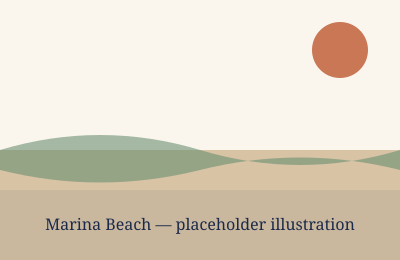
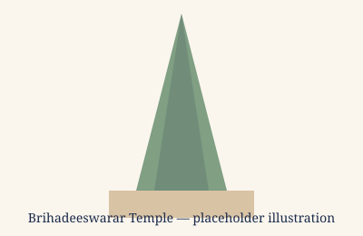

1 Europe
- France
- Paris
- Italy
- Rome
- Greece
- Athens
CS2205 — Web Programming 1
Routes From Chennai
A Journey Through Tamil Nadu and Indian Heritage
From the open coastline of the Bay of Bengal to the carved temple towers of the Tamil interior, this is a record of three places that define Tamil Nadu's character: a working city beach, a living Dravidian temple city, and a Chola-era monument carved in granite.
Read the travel stories →
01 — Chennai
"One of the longest urban beaches in the world, and still a working shoreline."
Marina Beach runs for several kilometres along Chennai's Bay of Bengal coastline. It is not a resort strip: it is a promenade for evening walkers, a landing point for fishing boats, and a shoreline that anchors the city's identity as a historic port and the administrative capital of Tamil Nadu.
02 — Madurai
"A gopuram tower covered, tier by tier, in painted figures."
At the historic centre of Madurai, the Meenakshi Amman Temple is a Dravidian-style complex known for its sculpted gopuram towers. Madurai is considered one of the oldest continuously inhabited cities in Tamil Nadu, and the temple remains its civic and religious focal point.


"A UNESCO World Heritage monument, carved in granite in the eleventh century."
Built under the Chola dynasty in the early eleventh century, the Brihadeeswarar Temple is part of the Great Living Chola Temples UNESCO World Heritage Site. Its granite vimana tower was one of the tallest structures of its era, reflecting the engineering reach of Chola-period South Indian architecture.
World Destinations Directory
Each numbered region links to its section below, preserving the full country and city hierarchy.